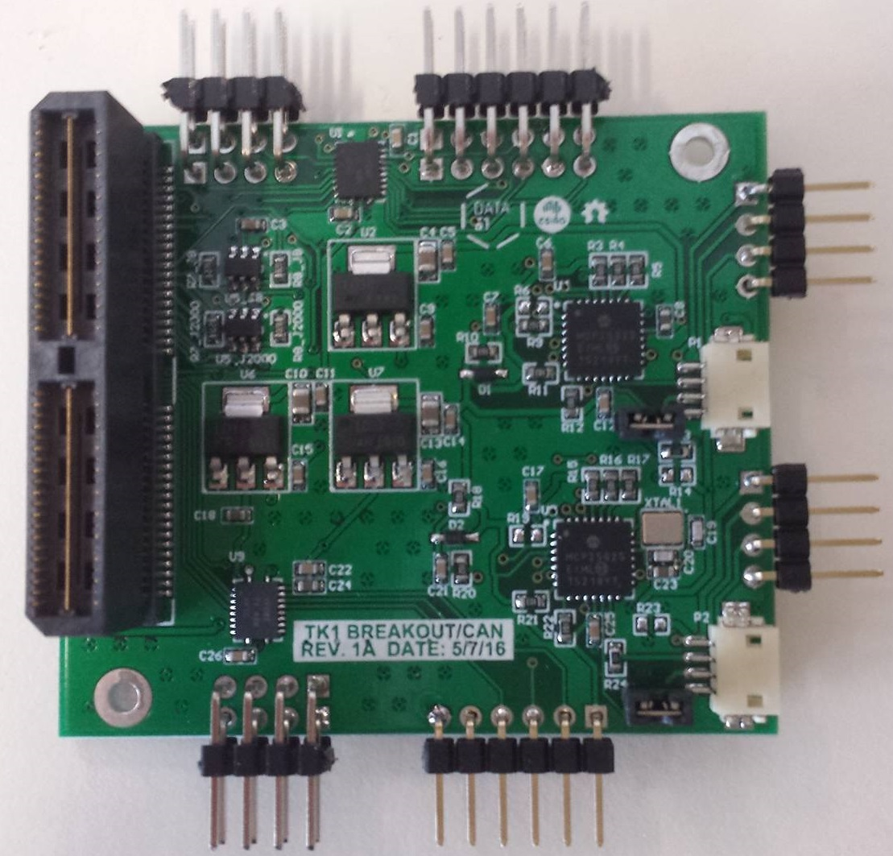
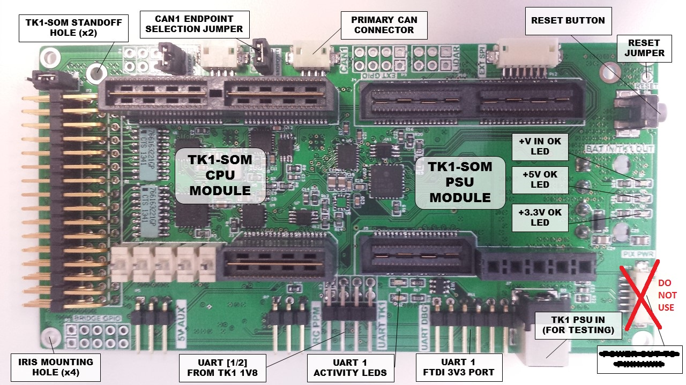
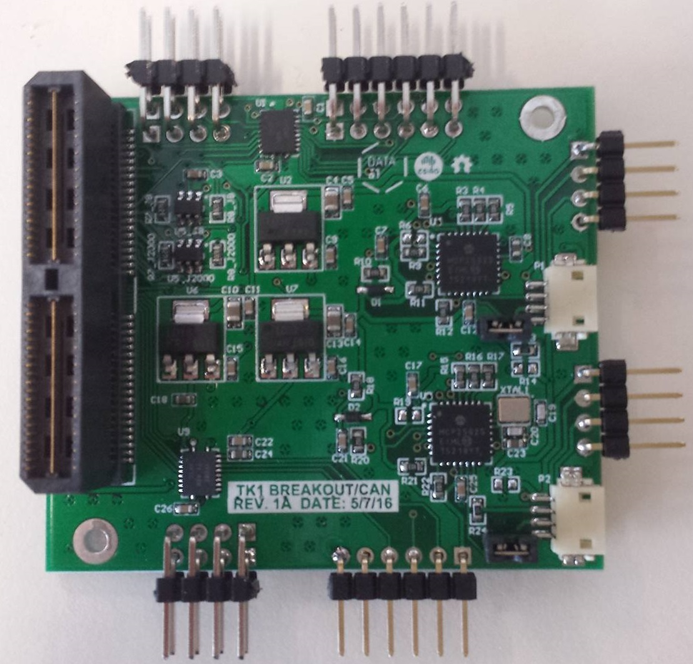
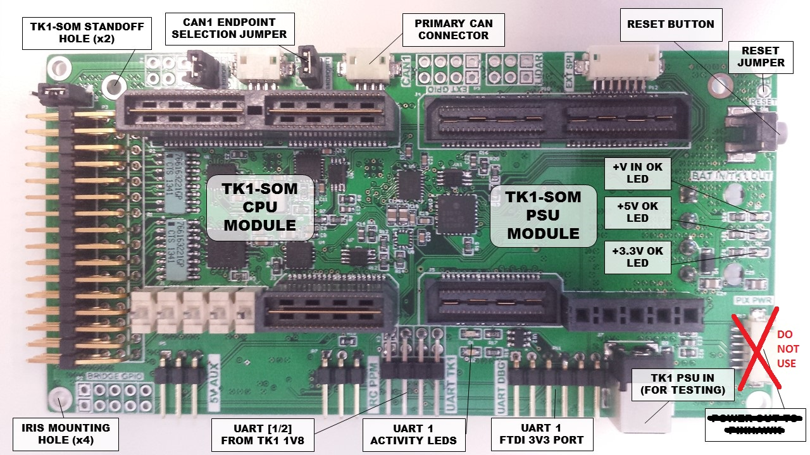
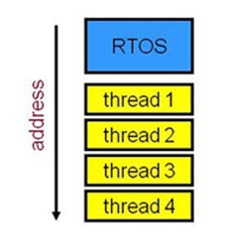
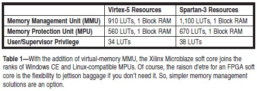

Memory Protection in eChronos
Attepting to enforce isolation on teeny hardware
Seb HolzapfelWhat am I doing here
- eChronos/lwIP (linux.conf.au) [3 months]
- eChronos VGA demo (D61+) [2 months]
- CAN Daughterboard [2 months]
- Quadcopter Daughterboard [6 months]
- Memory protection [6-week]

 



Memory Protection Unit (MPU) vs. Memory Management Unit (MMU)
 - Single contiguous address space (no virtual memory)
- Key specification is number of protection regions
- Relies on memory segmentation for isolation (due to limited regions)
- Enforces RW, RO, XN permissions by firing an IRQ on violation
- Less complicated to implement = cheap, lower power consumption
ARM Cortex-M Features
| Feature | M0 | M0+ | M1 | M3 | M4 | M7 |
|---|---|---|---|---|---|---|
| SysTick | Opt. | Opt. | Opt. | Yes | Yes | Yes |
| Bit-Banding | Opt. | Opt. | ||||
| MPU (Regions) | Opt. (8) |
Opt. (8) |
Opt. (8) |
Opt. (8,16) |
||
| Instruction Cache | Opt. | |||||
| Data Cache | Opt. | |||||
| Vector Table Offset | Opt. | Opt. | Opt. | Opt. | Opt. | |
| Architecture | Von Neumann | Von Neumann | Von Neumann | Harvard | Harvard | Harvard |
Cortex-M MPUs have
- 8 protection regions - or 16 on some M7s (rare)
- Each region has NA/RO/RW & EXEC flags
- Each region has a base address and region size
- Region size must be a power-of-2
- Base address must be aligned to region size
- Can configure regions to be active in user mode but not privileged mode, or to be active at all times
- Each region can be split into 8 sub-regions, and overlapped with other regions (not currently used)
RTOS Mem. Protection Landscape
Have official MPU support
- Sloth RTOS (world's fastest!)
- FreeRTOS
- SMX RTOS
- Segger embOS
- AUTOSAR (but not really same league)
No official MPU support
- Zephyr RTOS
- Contiki OS
- TI-RTOS
- Micrium uC/OS - used to?
- uKOS
- Prex
- Everything else!
- eChronos (for now...)
With no optimization...
Sloth RTOS
Results from paper 'Safer Sloth', on unnamed Cortex-M3
| Operation | Cycles |
|---|---|
| Context switch | 30 |
| Inline trap | 34 |
| MPU reconfigure | 130 |
eChronos RTOS
Results on acamar variant, on TI Cortex-M4, 10k trials, H/W cycle counter
| Operation | Cycles |
|---|---|
| Context switch | 30 |
| Inline trap | 34 |
| MPU reconfigure | 130 |
USB Demo Architecture
USB Stack Demo
USB Demo - a small cheat...
int usb_device_irq(void) {
// Get the controller interrupt status.
usb_device_driver_status = MAP_USBIntStatusControl(USB0_BASE);
// Disable the USB interrupt, otherwise it will constantly fire
// until handled - which we're about to do.
ROM_IntDisable(USB_IRQ);
// Wake up the USB device driver task
rtos_interrupt_event_raise(RTOS_INTERRUPT_EVENT_ID_USB_DEVICE);
return true;
}
void task_usb_device_driver_fn(void) {
while(1) {
rtos_signal_wait(RTOS_SIGNAL_ID_USB_DEVICE_INTERRUPT);
// Call the internal handler.
USBDeviceIntHandlerInternal(0, usb_device_driver_status);
PRIVILEGED_ACTION(IntEnable(USB_IRQ));
}
}
What is an RTOS?
Low-overhead OS, makes guarantees about execution time. Often intended for embedded use. May have heard of...
- FreeRTOS (very common)
- Simba OS (arduino)
Writing firmware that could benefit from primitives like threads, mutexes, signals etc.
Why is eChronos interesting?
A model of the RTOS' architecture is being mathematically verified*
Component-based construction means that the overhead of using this RTOS is kept at a minimum. How? 2 stages.
*model-checking for adherence to our specification without unintended side-effects (abstract, not code-level). 'Progress' proofs would be even nicer, perhaps a future project
1. Constructing a minimal OS
- Only include the features you need
- The RTOS has 7 different OS variants.
x.py:
'acrux': [Component('stack', pkg_component=True),
Component('context-switch', pkg_component=True),
Component('sched-rr', {'assume_runnable': False}),
Component('interrupt-event', {'timer_process': False}),
Component('simple-mutex'),
Component('error'),
Component('task'),
...
]
Component('sched-rr', {'assume_runnable': False}),
Component('simple-mutex'),
Component('task'),
2. Project files (.prx)
<system>
<modules>
<module name="tiva_lwip.http_server" />
<module name="tiva_lwip.armv7m.vectable">
<flash_load_addr>0x0000000</flash_load_addr>
<preemption>true</preemption>
...
<external_irqs>
<external_irq>
<number>40</number>
<handler>lwIPEthernetIntHandler</handler>
</external_irq>
...
</external_irqs>
</module>
<module name="tiva_lwip.armv7m.rtos-kochab">
...
<tasks>
<task>
<name>ethernet_interrupt_task</name>
<function>ethernet_interrupt_task</function>
<priority>14</priority>
<stack_size>8192</stack_size>
</task>
...
</tasks>
<semaphores>
<semaphore>
<name>lwip_aux_sem_1</name>
</semaphore>
</semaphores>
...
<external_irq>
<number>40</number>
<handler>lwIPEthernetIntHandler</handler>
</external_irq>
...
<task>
<name>ethernet_interrupt_task</name>
<function>ethernet_interrupt_task</function>
<priority>14</priority>
<stack_size>8192</stack_size>
</task>
...
<semaphore>
<name>lwip_aux_sem_1</name>
</semaphore>
Why static?
- Optimize the OS implementation: makes it possible to perform extreme space-saving optimizations - for example, bitpacking the task ID field to 2 bits if there are only 3 tasks.
- Easier to find bugs in: Code analysis tools find bugs in user-level code much easier. NASA's programming guidelines...
Interested in learning how to use eChronos? Tutorial running on Friday at 10:40 in D2.211. There's also a quickstart guide in the github repository.
Trap: interrupt priority resolution


- Non-preemptive (co-operative) scheduler: Have to
yield()orsleep()to let the RTOS switch from A to B - Preemptive scheduler: RTOS can change to B when A is in the middle of doing something (if B is higher priority)
A closer look
- This RTOS (and some others) internally uses the system's
pendsvandsvcISRs to facilitate preemption. - It's common to set these 2 interrupts as the 2 lowest-priority interrupts in the system (so they don't mask 'real' interrupts)
What is a priority?
ARMv7m reference manualNVIC Interrupts are prioritized by updating an 8-bit field within a 32-bit register. (Each register supporting 4 interrupts).Cortex M4 technical reference manual
NVIC registers [...] described in the ARMv7m Architecture Reference Manual
Get to the point!
8 bits, so 2 lowest-priority interrupts are 254 and 255, right?
But the RTOS crashes! Only on hardware.


- Problem:
254==255in 3/4 bit system, so crashes! - Solution: Choose distinct priorities irrespective of lower order bits
- Moral: Manufacturers cut corners!
- Result: Patch in RTOS and documentation glob
OS & Hardware - What else?
- Hardware has an ethernet controller
- OS runs our code
But, we need a way to operate the ethernet controller so that we can communicate with a network - a TCP/IP stack.
Answer? lwIP
lwIP
- Lightweight IP
- Open-source TCP/IP stack, BSD license
- Written in C
- Tiny, easily deals with < 20kB of RAM
Nice, but how do I use it on my plaform?
Huge amount of existing ports; there is a good chance one already exists
Porting lwIP involves:
- Implementing the physical hardware interface
- Implementing any syscalls that lwIP needs (RTOS dependent!)
Both are just a set of stub .h and .c files.
Syscalls: Some of what lwIP needs:
- Threads:
sys_arch_thread, sys_arch_thread_new, ... - Message Queues:
sys_mbox_new, sys_mbox_post, sys_arch_mbox_fetch, ... - Semaphores:
sys_sem_new, sys_sem_post, ...
orange == requires dynamic allocation
eChronos makes this interesting
In exchange for eChronos' high-assurance, we lose dynamic allocation of OS primitives. This means we can't just pull a new task out of thin air, for example.
Answer: Cheat
1. Remove dynamic allocation
A task may exist for the program lifecycle without a chance of being deleted or reallocated. Similar scenario with other primitives.
- Means it's possible for these elements to be static. So,
- Remove the dynamic allocation, add the element to our
.prxfile
E.g. master TCP thread, ethernet signal response thread, TCP usage lock
However, not every primitive is used like this!
2. Feign a memory manager
With anything else, the solution is to
- Allocate dummy primitives statically (in
.prx) - Write a manager for dealing with usage of these static resources
- Put a hard upper bound on the number of these primitives.
- Do traffic benchmarks, ensure we never hit the upper bound.
Otherwise bad things will happen!
Hardware Demos